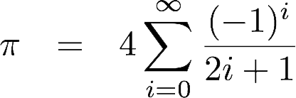

El matemático Gottfried Wilhelm Leibniz, encontro una formula para poder llegar a PI.
Esta formula es la siguiente:

En el espacio siguiente, ingresa la cantidad de iteraciones que quieras pasar por la sumatoria, entre más mas cercano a PI estaras(recomendamos menos de 1000 para no estresar tu PC).
N: